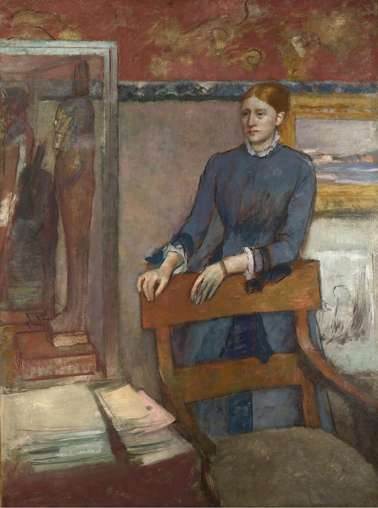

埃莱娜·鲁阿尔在父亲的书房 Hélène Rouart in her Father's Study
德加 · 约1886年 · 伦敦国家美术馆
Edgar Degas · about 1886 · The National Gallery, London
图片：Wikimedia Commons，公有领域 / Image: Wikimedia Commons, public domain

发现 · Discover
空椅子 The empty chair
埃莱娜站在父亲的书房里，双手搭在父亲那把空着的椅子背上。
Hélène stands in her father's study, her hands resting on the back of his empty chair.
埃及雕像 Egyptian statues
她身后的玻璃柜里，有三尊埃及雕像。她的父亲去过埃及，也收藏埃及文物。
Behind her, in a glass case, are three Egyptian statues. Her father had visited Egypt and collected Egyptian artefacts.
麒麟挂毯 The kylin hanging
她头顶上方，挂着一幅橙红色的中国丝绸挂毯，上面绣着金色的麒麟，一种看起来有点像狮子的神兽。
Above her hangs an orange-red Chinese silk hanging, decorated with golden kylins, mythical creatures that look a little like stylised lions.
父亲的收藏 Her father's collection
墙上还有父亲收藏的画，包括一幅柯罗的画和一幅米勒的素描。
On the walls are other works from her father's collection, including a painting by Corot and a drawing by Millet.
没画的戒指 No wedding ring
画这幅画时，埃莱娜23岁，已经结婚，但德加没有画出她的结婚戒指，也许是为了强调她作为女儿的身份。
Hélène was 23 and married when this was painted, but Degas does not show her wedding ring, perhaps to emphasise her status as a daughter.
一层层的颜色 Layers of colour
仔细看，淡紫色的墙面下透出绿色和金色，蓝裙子的一些地方透出红色。
Look closely: greens and golds show through the lilac wall, and reds through parts of the blue dress.
九岁时的她 At nine years old
埃莱娜九岁时，德加就画过她坐在父亲膝上的样子。
When Hélène was nine, Degas had painted her sitting on her father's knee.
故事 · The story
ACT I 第一幕 · 老朋友的女儿 An old friend's daughter
亨利·鲁阿尔是一位工程师，也画风景画，还和印象派画家一起参展。他是德加的老朋友，也是一位大收藏家。德加只给家人和熟悉的人画肖像。
Henri Rouart was an engineer who also painted landscapes and exhibited with the Impressionists. He was Degas's old friend, and a great collector. Degas only painted portraits of family and people he knew well.
约1886年 · 伦敦国家美术馆 / about 1886 · The National Gallery, London
ACT II 第二幕 · 一间说着父亲的房间 A room that speaks of her father
画名说这是埃莱娜的肖像，可是仔细看，这间房间讲的几乎都是她的父亲：他的椅子、他的书桌、他从埃及和中国收集来的东西。
The title suggests a portrait of Hélène. But look closely, and the room tells us almost everything about her father: his chair, his desk, the things he collected from Egypt and China.
约1886年 · 伦敦国家美术馆 / about 1886 · The National Gallery, London
ACT III 第三幕 · 来到伦敦 To London
1981年，伦敦国家美术馆买下了这幅画。今天，它挂在41号展厅。
In 1981, the National Gallery bought this painting. Today it hangs in Room 41.
约1886年 · 伦敦国家美术馆 / about 1886 · The National Gallery, London
她站在父亲的房间里。 She stands in her father's room.
作品档案 · Artwork record
| 画家（生卒年） · Artist (dates) | 埃德加·德加（1834–1917） / Edgar Degas (1834–1917) |
|---|---|
| 画名 · Title | 埃莱娜·鲁阿尔在父亲的书房 / Hélène Rouart in her Father's Study |
| 年份 · Date | 约1886年 / about 1886 |
| 材质 · Medium | 布面油画 / Oil on canvas |
| 尺寸 · Dimensions | 162.5 × 121 cm |
| 收藏地 · Collection | 伦敦国家美术馆，41号展厅 / The National Gallery, London, Room 41 |
| 来源说明 · Credit line | 1981年购入（编号 NG6469） / Bought, 1981 (NG6469) |
关于画家 · About the artist
埃德加·德加（1834–1917），法国画家，生于巴黎。他参加了印象派画展，以描绘芭蕾舞者著称。
Edgar Degas (1834–1917) was a French painter, born in Paris. He took part in the Impressionist exhibitions and is best known for his paintings of ballet dancers.